| Обложка | Краткое описание |
|---|---|
| 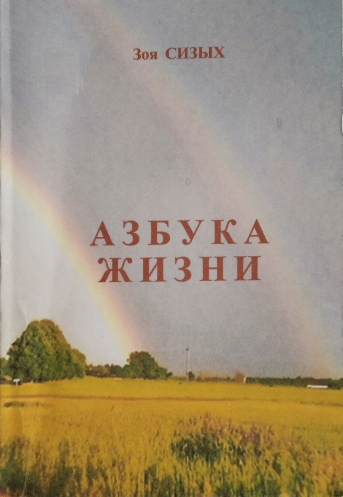 |
РАЗДЕЛ В СТАДИИ НАПИСАНИЯ |
| 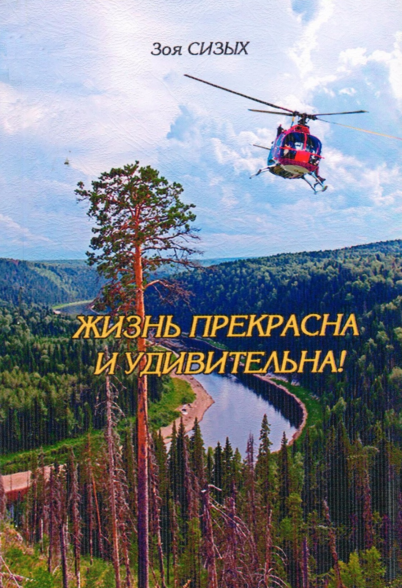 |
На веранде небольшого красивого дома в кресле – качалке сидела женщина бальзаковского возраста и смотрела на восход солнца. На лице её играла радостная улыбка, будто она приветствовала самого дорогого друга. Был август. Свежий ветерок словно ласкал модно подстриженные волосы сидевшей женщины. Затем взгляд её серо-голубых по-молодому блестевших глаз переместился на извилистую дорогу, по которой, несмотря на ранний час, мчались машины. Через несколько часов к ней на 60-летний юбилей приедут самые дорогие и любимые люди – дочь с внуком. Она не видела их почти два года. Ещё могут приехать приглашённые две приятельницы, племянница Танюшечка со своей семьёй и возможно … «человек из юности». Его желанный приезд будет волшебным подарком Вселенной, о котором она мечта 40 лет. Они не виделись целую вечность... Юбилярша долго сидела, слегка покачиваясь в плетёном кресле, и вся жизнь, словно в кино, проходила перед её глазами. В настоящее время она жила в небольшом старинном провинциальном городке на Волге, куда переехала более года тому назад. Дом, в котором она жила, был выигран ею по жилищной лотерее «Столото», и она сразу переехала в этот городок. В радостных хлопотах по обустройству дома и небольшого участка земли вокруг него она не заметила пролетевшего года. Приглашённые на юбилей родные и друзья не знали об этом подарке судьбы и сегодня впервые увидят её новый дом. Ещё и поэтому она волновалась в ожидании реакции на её дизайнерское оформление дома и сада, где всё было сделано её руками и с любовью. В задумчивости она прошла сначала к увитой лимонником и каприфолью беседке, чтобы убедиться, что разноцветные подушки лежат на деревянных скамейках, а в центре беседки на круглом столе стоит ваза с недавно срезанными флоксами, потом по дороге в дом срезала несколько чайных роз. От входной двери открывался вид на небольшой каминный зал, из которого три двери вели в ванную, кухню и спальню. Женщину звали Зоей. И весь её облик, несмотря на дату в паспорте, подтверждал и оправдывал её имя: Зоя – жизнь! Она двигалась легко, высоко держа голову с модной короткой стрижкой, плечи были расправлены, на губах почти всегда играла лёгкая улыбка, в глазах светился молодой задор... |
| 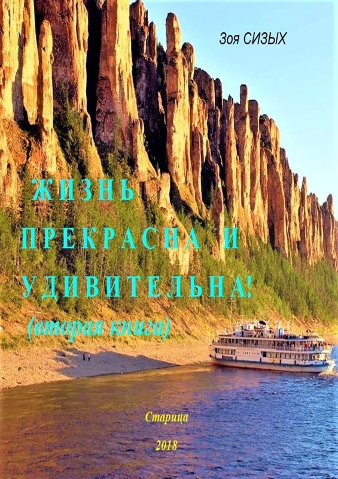 |
В роскошно обставленной гостиной на пушистом ковре завёрнутая в шёлковую простыню стояла босоногая миниатюрная женщина. Она внимательно разглядывала на стене многочисленные фотографии. Все они демонстрировали счастливую семейную жизнь потрясающе красивого мужчины с удивительно яркими синими глазами в обрамлении тёмных пушистых ресниц, золотистые волнистые волосы довершали совершенство гармонии черт его лица. Но сейчас Зою (так звали эту женщину) пригвоздило к фотографиям не обаяние мужчины, а мальчик на его руках. Он был очень похож на мужчину. Зоя ещё раз обошла стену от одного края до другого. Фотографии были расположены в порядке роста и развития ребёнка – примерно от трёхмесячного до шестилетнего возраста. К удивлению Зои матери мальчика не было ни на одной фотографии. Она была не просто потрясена увиденным, - она была близка к помешательству. Шёлковая простыня давно соскользнула с её обнажённого тела, но она этого не заметила. Она вернулась в спальню. На соседней подушке лежала охапка благоухающих розовых пионов. Их вид, как кнутом полоснул по её сознанию, - надо срочно бежать!... |
| 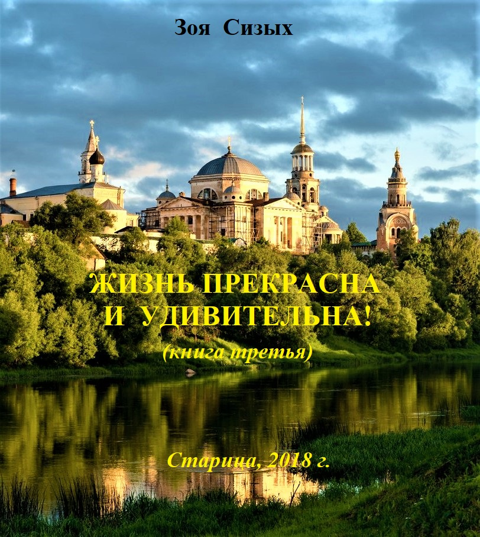 |
Она стояла на дорожке в своём саду и любовалась яркими красками «бабьего лета», нежными перистыми облаками на голубом небе. Она проснулась с радостным ожиданием чуда, в предвкушении счастья и оно не покидало её. С Зоиного юбилея прошёл месяц, а долгожданный «посланец» Дмитрия Андреевича с письмом от него так и не появился. Что случилось? Где он? Мысленно она перенеслась в последний день в Ленинграде после окончания университета. Она вспомнила телефонный прощальный разговор с Миклухо-Маклаем накануне своего отлёта в Якутск. Её, как и тогда, охватило чувство глубочайшего уважения и признательности к этому поистине большому учёному, прекрасному педагогу и интереснейшему человеку. Её воспоминания прервало шуршание колёс подъехавшей машины за её воротами. Несколько секунд она ждала стука открываемой дверцы. Молчание. Кто же такой нерешительный? Среди её знакомых таких нет! Быстрым шагом она подошла к калитке, открыла её и не поверила своим глазам. В машине сидел Миша, как бы набираясь смелости. « Что случилось, генерал? Где Ваша решительность? Вам помочь?», - со смехом сказала Зоя, подходя к машине. Миша смущённо улыбнулся, быстро вышел из машины и протянул ей огромный букет белых голландских хризантем. Потом взял с переднего сидения дипломат, закрыл машину и пошёл рядом с Зоей к дому. Она видела его напряжённое состояние и, чтобы развеять его, сказала: « Миша, я так соскучилась по Вашему необычайно ароматному чаю, что с удовольствием отдаю кухню в Ваше распоряжение». Сама пошла ставить цветы в напольную вазу... |
| 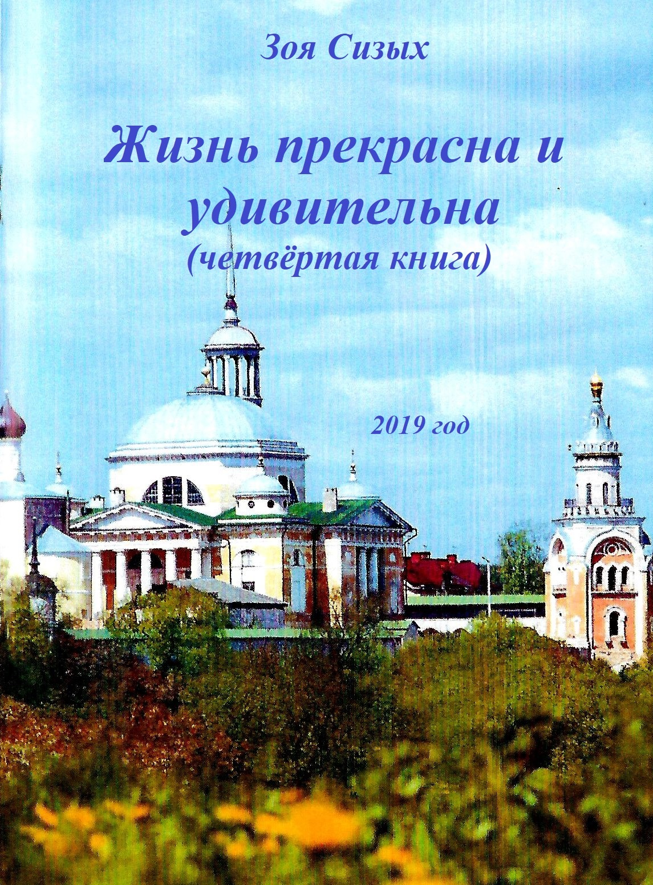 |
Они встретились вновь много лет спустя накануне 20-летнего юбилея их сына. Как будут развивавться их взаимоотношения? Победит ли любовь, соединившая их, казалось, навеки или многолетняя обида и оскорблённое самолюбие не позволит понять друг друга?... |
| 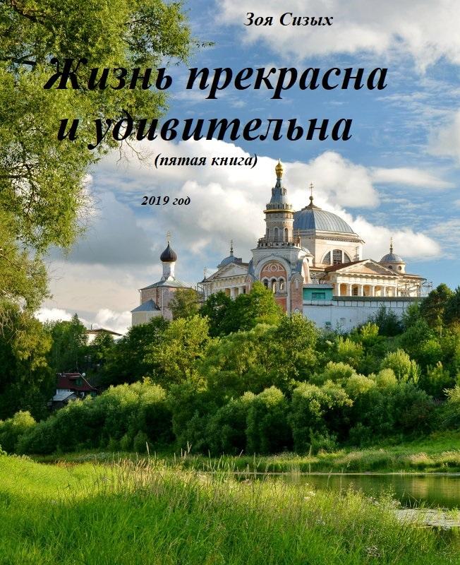 |
Одиночество не убило в их сердцах любовь, вспыхнувшую много лет тому назад. По разным причинам не закрепленную браком. Будет ли гармоничной их семейная жизнь... |
| 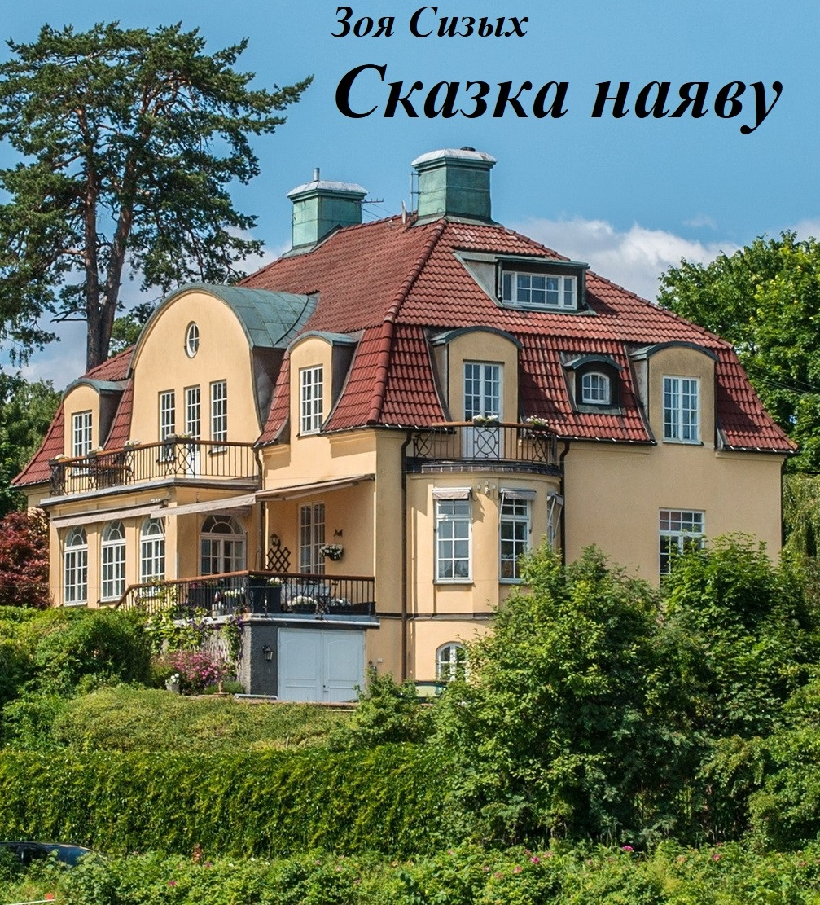 |
По великой сибирской реке Лене плыл белоснежный круизный лайнер. Он вышел из Якутска вчера во второй половине дня. Сейчас было два часа ночи. Царству «белых ночей» оставалось властвовать ещё месяц. Сидящая в шезлонге молодая женщина использовала в полной мере это богатство Севера: она читала книгу на верхней палубе и наслаждалась одиночеством. Её пышные белокурые локоны слегка шевелил ветерок. Время от времени она поднимала голову, чтобы полюбоваться безбрежным морем проплывающей тайги. И тогда её большие ярко голубые глаза принимали мечтательное выражение, а на губах появлялась прелестная улыбка. Весь облик молодой женщины отражал суть её имени – Светлана, созданная освещать мир своим обаянием и доброжелательностью. Это сразу отметил при посадке на теплоход идущий следом за ней молодой мужчина. И ещё не зная её имени, мысленно назвал эту впорхнувшую по трапу красавицу «Светлячком». Бессонница и его позвала на верхнюю палубу, но с другого конца. В Природе в это время властвовал «час Быка» (период с двух до четырёх часов ночи), который нередко предрасполагает к размышлениям и поискам правильных решений гармоничных и остро чувствующих природные явления людей. Судя по всему, и Светлана и только что вышедший на палубу высокий стройный мужчина скандинавского типа относились к такой категории людей. Это он назвал Светлану «Светлячком». Ему недавно исполнилось 32 года, звали его Бьёрн, мать – шведка, отец – русский. Светло-каштановые вьющиеся волосы, глаза цвета густого янтаря, прямой нос и ямочка на волевом подбородке делали его неотразимым в глазах женщин. Ступив на палубу, он увидел в дальнем конце сидящую в шезлонге Светлану. Он сразу узнал её, но приближаться не стал. Он боялся спугнуть её своим появлением на палубе в неурочный час. Проплывающая мимо вековая тайга завораживала - он не мог оторвать глаз от суровой красоты этого удивительного края. Казалось, что она помогает ему двигаться по лабиринту событий, которые способствовали этому круизу по реке Лене. Он его не планировал. Всё произошло спонтанно, хотя такие действия не в его характере. Всё изменилось за три дня до отплытия на круизном лайнере... |
| 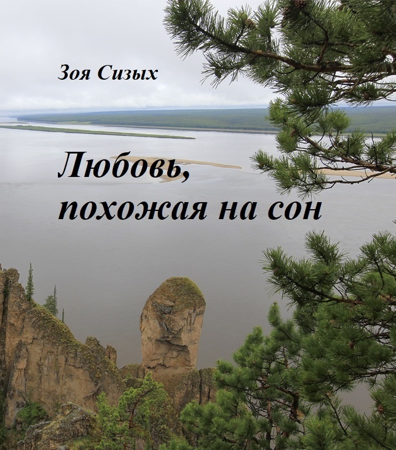 |
Две гармоничные личности случайно соприкоснулись в толчее метро. Позднее выяснилось, что они живут по соседству. С этого момента их жизнь стала напоминать "колесо удачи" в казино. Что их будет ждать "на выходе"?... |
| 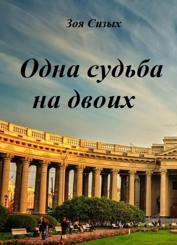 |
В Санкт-Петербурге был разгар «белых ночей»,- по ночному городу оживлёнными толпами гуляли выпускники школ, студенты, только что сдавшие экзамены и зачёты весенней сессии, туристы из разных стран и влюблённые парочки. Анастасия рассталась со своими гостями на Исакиевской площади, они разъехались по домам на такси. Она пешком пошла домой, в свою небольшую двухкомнатную квартиру на Фонтанке, доставшуюся ей от бабушки. Она упивалась своим счастливым состоянием души, своей свободой и заманчивыми предложениями по предстоящей работе. Её блаженное состояние было нарушено появлением с правой стороны мужчины, шедшего также неспешно, как она. Настя приостановилась, надеясь, что он пройдёт мимо, а она продолжит свой путь в необходимом ей сейчас одиночестве. Он тоже притормозил и повернулся к ней. Этого она явно не ожидала, поэтому жестом указала ему свободный путь. Он ответил ей обаятельнейшей улыбкой и лучистым взглядом синих, как море, широко открытых глаз. «Простите, пожалуйста, что нарушил Вашу внутреннюю гармонию своим желанием поздравить Вас с успешной защитой кандидатской диссертации! Надеюсь, это прекрасный трамплин в Ваше будущее! Если понадобится помощь, звоните». Он передал Анастасии свою визитку, послал воздушный поцелуй и исчез. Она не успела произнести ни одного слова в ответ, но её с головой накрыла такая волна ликования, словно с небес спустился ангел и своим крылом указал ей дорогу к счастью, Настя ускорила шаг и почти подлетела к своему дому. В квартире она подошла к окну, выходящему на Фонтанку, долго смотрела на воду, будто в ожидании появления «Алых парусов». Она пыталась вспомнить его лицо, весь его облик, но кроме сияния его синих глаз и вьющихся золотистых волос не помнила ничего... |
| 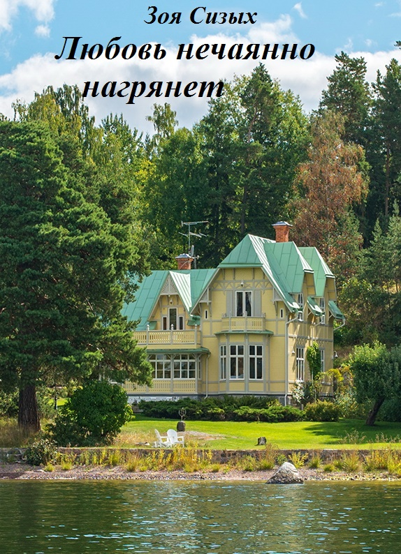 |
Наташа проснулась от трелей соловья и лёгкого дуновения ветра от настежь раскрытого окна. Было раннее утро её первого отпускного дня в родительском доме на крутом берегу Волги. Вместе с первыми лучами солнца пришло осознание приближающихся счастливых перемен в её жизни. Она сладко потянулась, открыла глаза цвета нежного изумруда в обрамлении длинных чёрных ресниц и увидела необыкновенно красивый восход солнца. Заворожённая этим зрелищем она подошла к окну, отодвинула в сторону тюлевую занавеску, опустилась на колени и, положив подбородок на сложенные руки, устремила свой взгляд через Волгу на это природное чудо. Ликующее состояние усилилось, когда рядом с нею у окна встало трёхлетнее чудушко в образе золотоволосого мальчика с широко раскрытыми восторженными глазами. Наташа нежно обняла мальчика и спросила: «Ты когда – нибудь видел в Москве такую красоту, малыш?» Он отрицательно покачал головой.<…> Наташа пошла к реке, к месту их вчерашнего пикника. На песке не было следов его ножек. Через час безрезультатных поисков на берегу, горько рыдая, она поднялась к своему дому. Около калитки удручённо вышагивал один из добровольных поисковиков. Они обменялись горестными взглядами и в это время услышали со стороны лесочка плач ребёнка и успокаивающий его бархатный мужской голос. Наташа побежала в их сторону. Ей навстречу из леса с ребёнком на руках шёл сказочно прекрасный улыбающийся молодой бог. Наташа словно летела к ним. А подлетев, обхватила их руками и прижалась. Мужчина замер на несколько мгновений, потом взволнованно произнёс: « Принимайте Вашего сына! Он обещал, что больше никуда не убежит!»... |
| 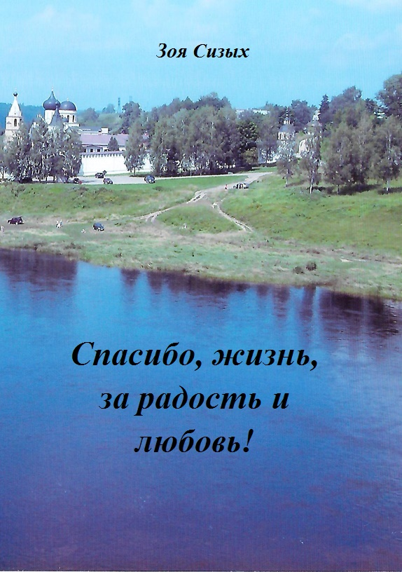 |
Было раннее предрассветное утро в середине лета, Восток был окрашен пылающим заревом. Его отблески окрашивали нежным розовым цветом редкие проплывающие облака на фоне голубого неба. Завораживающая картина Природы! Был ЧАС БЫКА. Этот период нередко для любующейся рассветом женщины сопровождался бессоницей, поэтому она старалась использовать его с максимальной пользой: в мечтах и планах на предстоящий Лунный месяц, если он совпадал с первым и вторым Лунными днями, или в чётком планировании распорядка трудового дня среди недели, В это утро начинался 21 Лунный день, самый «пробивной» для неё, и от результата предстоящей встречи зависело очень многое в её жизни на ближайшие несколько лет. Женщину звали Ириной. Она стояла у распахнутого настежь окна в ожидании восхода солнца, чтобы поздороваться с ним и попросить у него частичку его силы, энергии, тепла и света для положительного решения дел. Она относилась к редкому типу женщин, для которых всегда открыты все двери, однако сегодня для неё могла открыться неожиданная дверь, войти в которую она долгое время не решалась. Сегодня ей предстояло встретиться с руководителем крупного финского издательства по поводу издания её нескольких книг... |
| 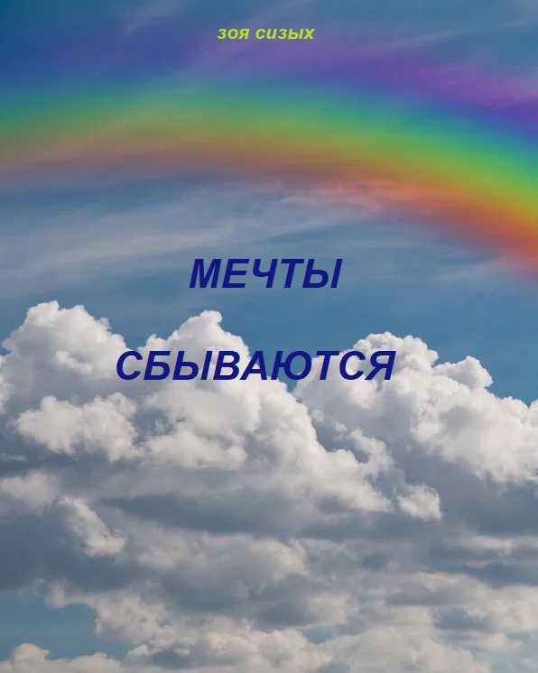 |
Так ли случайны встречи на дорогах, приводящие к счастливым бракам? Или всё в нашей жизни предопределено СВЫШЕ? Верность друзей и родных людей помогает восстановить честь и достоинство ушедшего из жизни отца Владимира. |
| 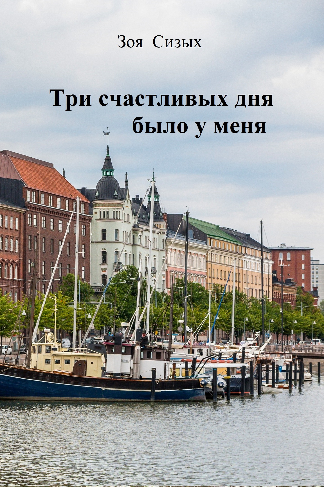 |
Ирина прожила интересную жизнь, насыщенную яркими событиями, творчеством и любовью. В свой 85-летний юбилей она получила от любимого мужа самый желанный подарок - путешествие по местам, в которых ей много лет хотелось побывать. В этом путешествии её сопровождали муж и сын. На лесной тропинке, в загадочном таёжном краю, её сын встретил свою суженную. |
| 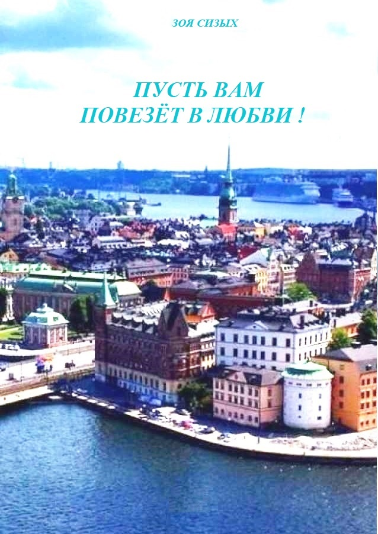 | Татьяна знала, что она хочет от жизни. У неё потрясающая деловая хватка и жизненный принцип: "Счастье человека - в его руках!" Убегая от огромной собаки, она упала в обятия молодого обаятельного мужчины. Вспыхнувшая любовь открыла в ней ещё одно призвание - быть нежной и ответственной за здоровье своих детей матерью. Их, казалось бы счастливая семейная жизнь закончилась при планировании второго здорового ребёнка. В этот вечер, Таня узнала, что у серёжиной студенческой подружки много лет тому назад родился мальчик-калека. Она ясно осознала, что для неё спокойная семейная жизнь с Сергеем осталась в прошлом. Проблемы с живущим в одном городе его больным сыном будут нарастать. Слёз не было. Она словно вернулась к тому, с чего хотела начать свою взрослую самостоятельную жизнь. Спустя 7 лет, Сергей вспомнил тот вечер и понял, что тогда Таня предлагала ему на выбор два варианта их дальнейшей семейной жизни - он не оправдал её ожиданий. Ответственность за судьбу необыкновенного сына она разделила с другим мужчиной - своим вторым мужем. |
 | Разбросанные по разным странам и континентам, потомки древнего рода воссоединились. Благодаря встрече юной студентки московского архитектурного факультета Сони со знаменитым английским археологом. Они встретились и полюбили друг друга на восстановительных работах одного из древних русских монастырей в Тверской области. Соня осуществила семейную мечту, построила по своему проекту Храм Любви на дарованной ей отцом земле с необыкновенной живительной силой. |
| 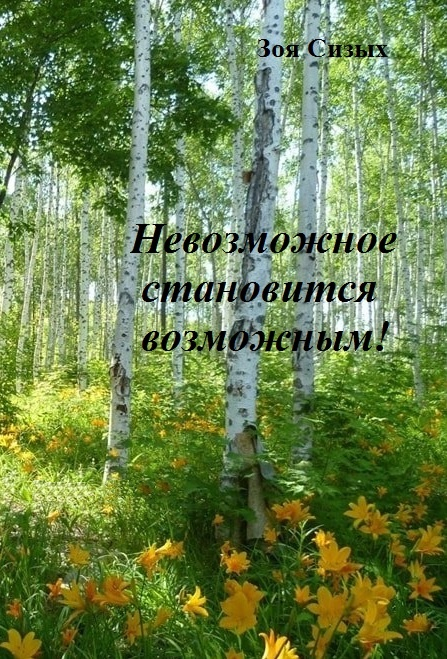 | Многолетние женские тайны трёх поколений семьи стали явными. Эти обстоятельства позволили членам большой семьи убедиться в том, что любовь и верность, пронесённые сквозь года и десятилетия, могут противостоять даже природным аномалиям. |
| 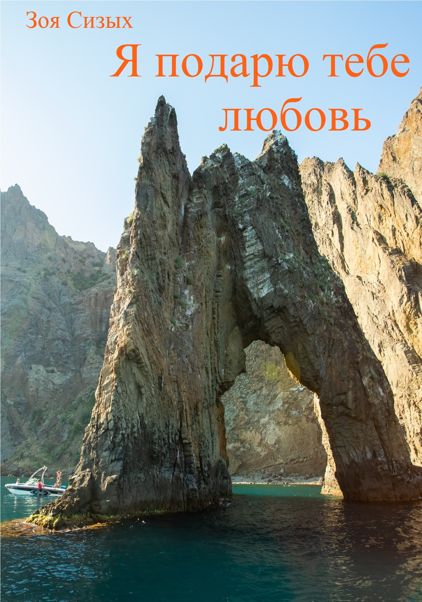 | Спасая тонущую в Чёрном море женщину, Владимир и подумать не мог, что в её лице выловит "золотую рыбку". Она исполнит три его заветные мечты, согласившись стать его женой. И сделает счастливым. |
| 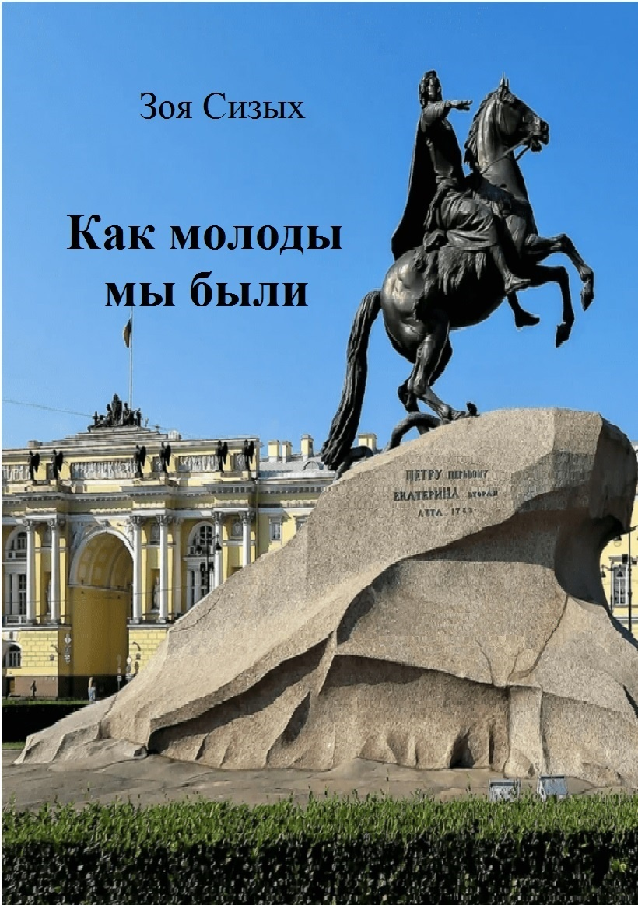 | В момент окончания важного жизненного "тайма", троих молодых людей судьба свела в Новосибирском аэропорту. Двое мужчин и девушка были связаны нитями любви. После встречи, в их жизни произошли кардинальные перемены. Один из мужчин выбрал для себя путь на родину, потерянную в детстве. У другого появилась надежда удержать "девушку своей мечты". А девушка "лишь измены простить не смогла", стойко выдержала перемены и вскоре обрела своё счастье. |
| 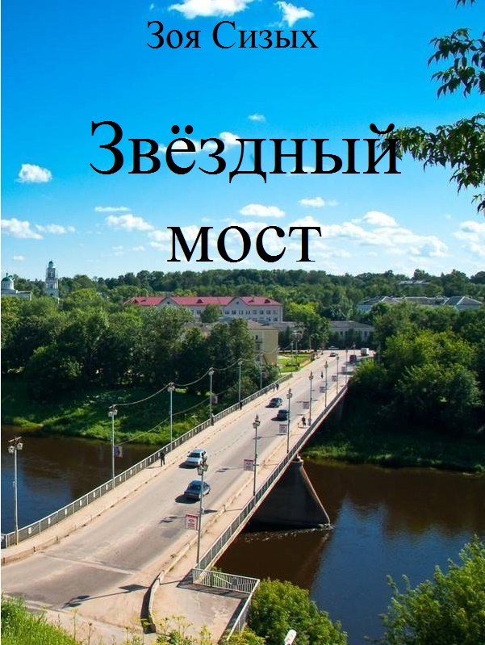 | В минуты опасности для своей жизни Анна обратилась за помощью к человеку, в порядочности которого была убеждена. |
| 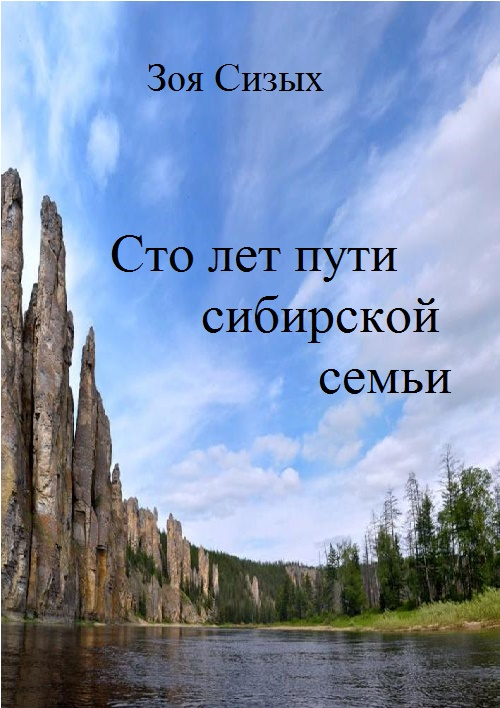 | ПО ЗАПРОСУ |
| 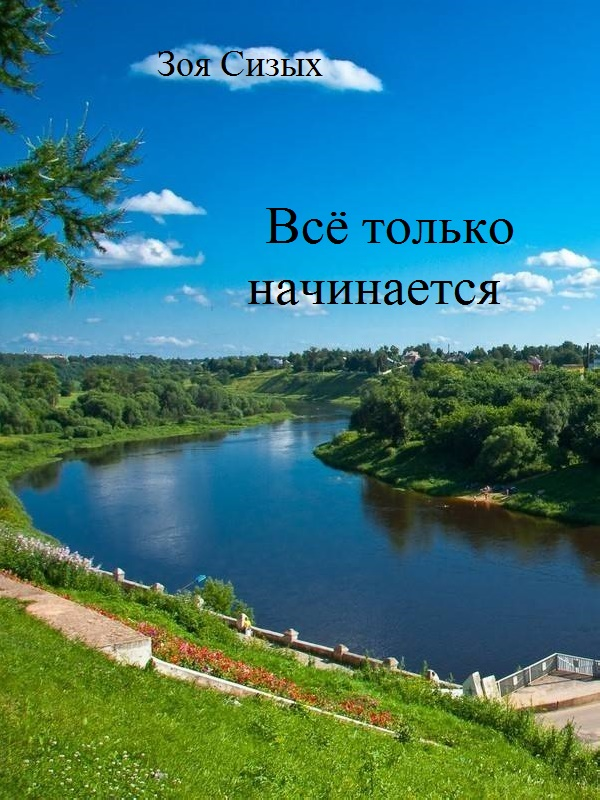 | Первой наставницей Зои в нравственном становлении была её бабушка . Заложенные ею семена долгие годы ждали своего всхода под влиянием жажды духовных исканий внучки. Они помогли Зое выстоять в периоды трудных испытаний. |
| 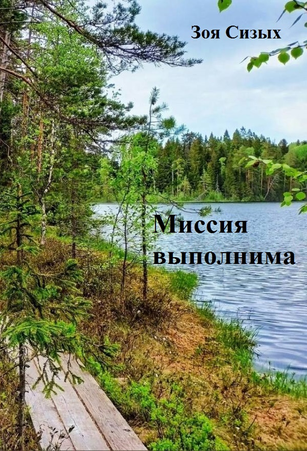 | У каждого человека своя миссия на Земле. Александре предстояло укрепить семейные узы. |